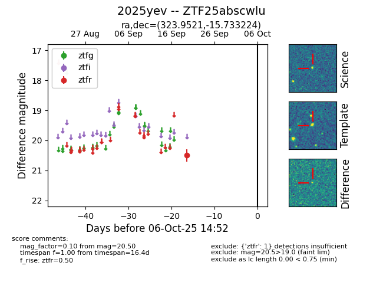

FINK: ZTF25abscwlu
Lasair: ZTF25abscwlu
ALeRCE: ZTF25abscwlu
TNS: 2025yev
YSE: 2025yev
ZTF25abscwlu (ztf,fink)
2025yev (tns,yse)
equatorial (ra, dec) = (323.9521,-15.73322)
galactic (l, b) = (36.6509,-43.36926)

last ztfr=20.50
1 ztfr detections